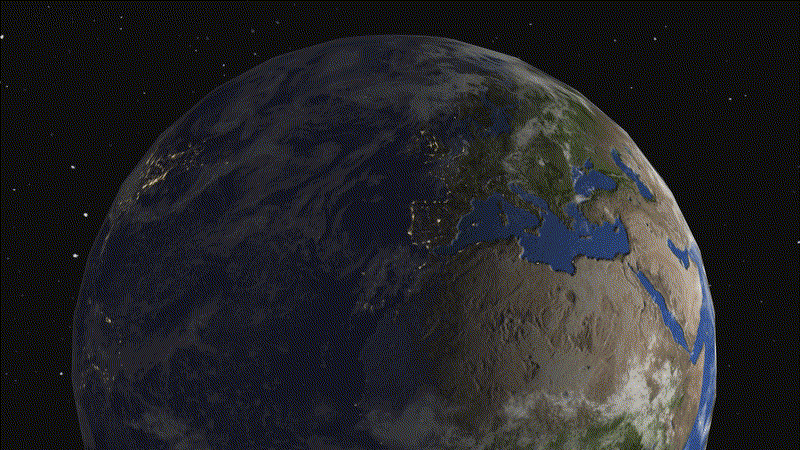
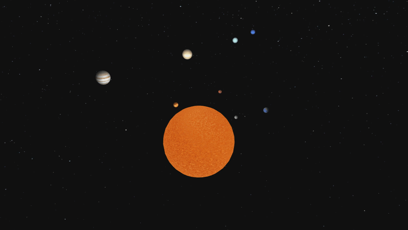
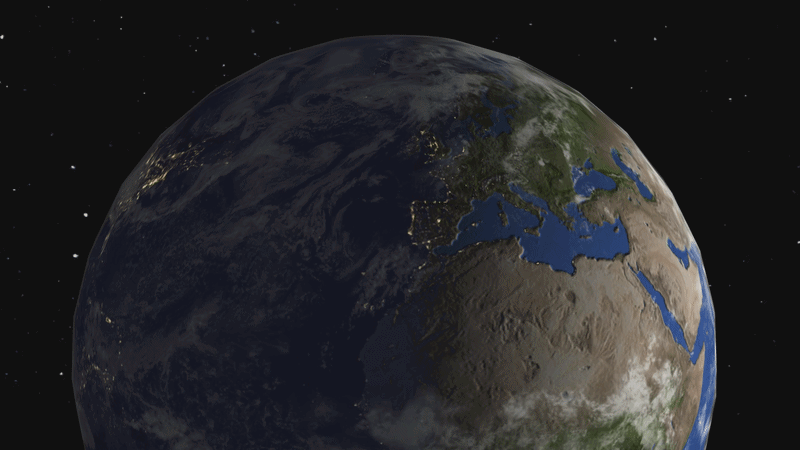

OpenGL/C/C++ Implementation of Common Rendering Concepts and Tecniques

Demo Reel
After spending a lot of time this year working through learnopengl.com, I've decided to set up a challenge for myself and try to make a larger project, implementing most of the techniques I've learned about.
Reading the book was somewhat straightforward and clear. Had to stop to wrap my mind around certain things, but I wouldn't consider it super hard necessarily. Only once I tried to implement all of those concepts at once, that is where things started to get all tangled up.
I kind of knew that all example demo projects from the book are just that, isolated little sandboxes made with a singular purpose of representing a concept covered in the chapter. But I didn't realize what that truly means until I tried to combine them.

Visual Example
Simply, I made a list of things I wanted to implement in my project. The list looked something like this:
Basic Graphics:
Intermediate Graphics:
Advanced Graphics
First step after finishing all the tasks from "the basics" section, was to implement planets and their rotations around the Sun. Biggest problem was getting the correct scaling. I wanted to make it physically accurate, but I soon found out that it's impossible. Planets differ in sizes as well as distances way too much, and it wouldn't be feasible. But on the other hand, I just didn't want to go off of my vibe and make random sizes which "feel" alright.
So what I did instead, I found official data online (diameters, distances from the sun, rotations speed, orbital speed, day and year lengths), I normalized ALL the data according to Earth, and then mapped all values to a logarithmic function. So basically the greater the value tries to get, the more it gets reduced. That way, I was able to fit all the planets on the screen, all of them differ in sizes and distances very roughly but accurately, and it all looks pretty good!
HOWEVER, don't get me wrong, this took DAYS. I was so lost in all the different units. So days were in hours, years were in days, distances in kilometers, orbital speeds were in km/s, rotation speeds in km/h, I calculate all rotations in rotation matrices which take radians. Oh God it was A MESS to say the least. I'm so glad I got pass that and that I never have to do it again :D
After that, I sailed smoothly for a while, Blinn-Phong, MSAA, adding textures, normal maps, day/night cycle on earth, clouds, cube-map, post processing framebuffer, and even a cooler looking Sun's fragment shader (which I just copied from an online resource found in references, 2D slice of a 3D Perlin noise is outside my current caliber). But then I got stuck again... OMNIDIRECTIONAL SHADOWMAPS....
Oh God, this was a few more days of pure pain and agony. But I'm SO glad I did it, I feel as if it was the most beneficial thing to get over in this project. It's something I'd like to talk more about in the YouTube video!
But there are a few more features to be added, like HDR, bloom and SSAO. Working on it currently and it shouldn't take too long I hope!
